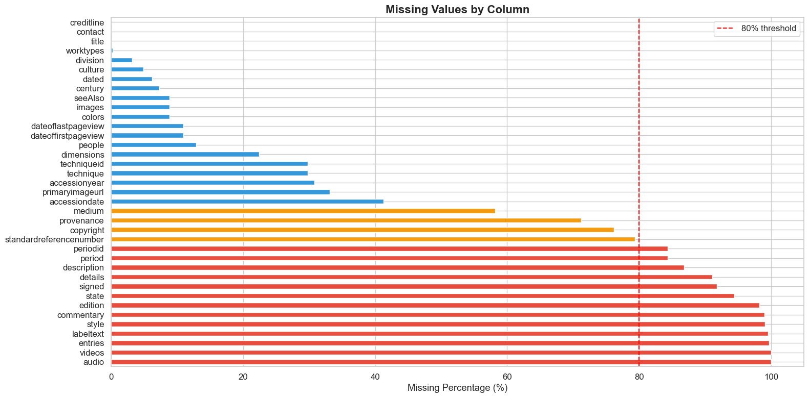
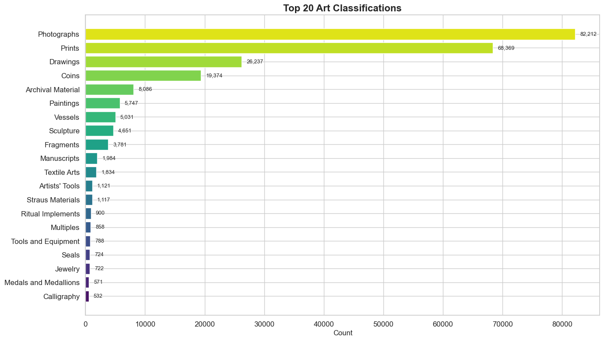
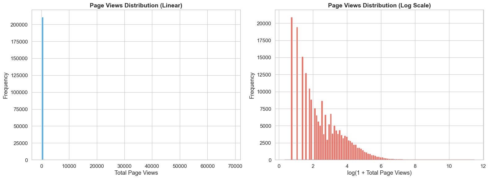
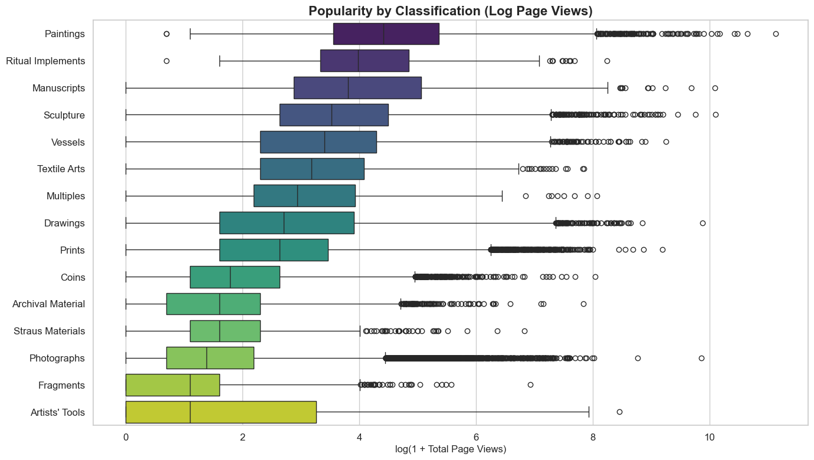
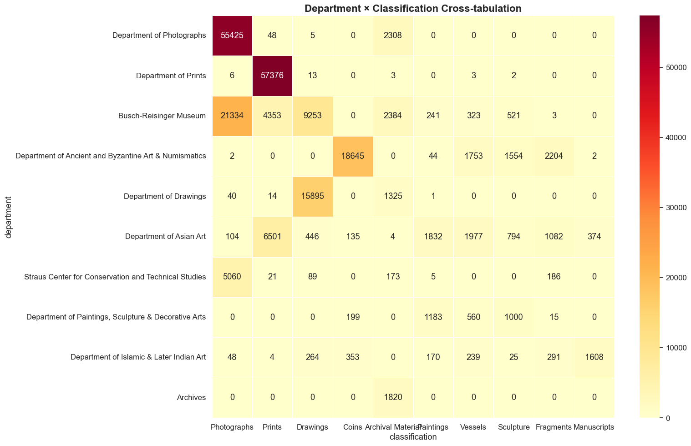
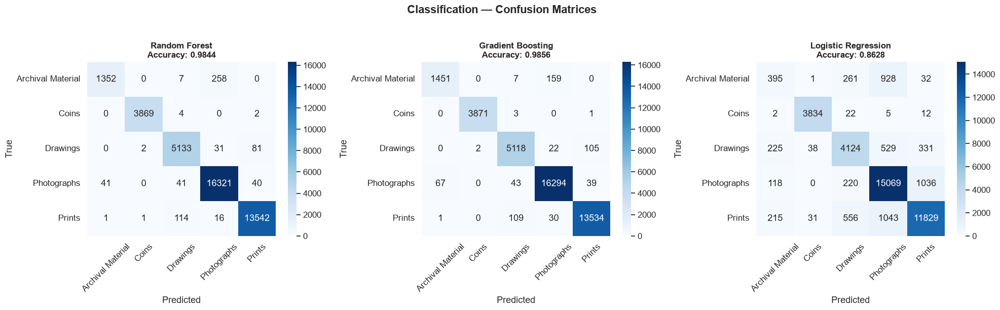
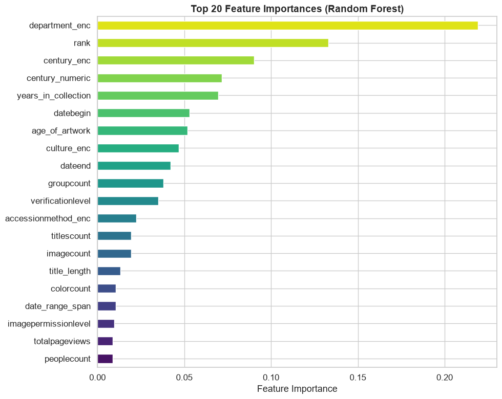
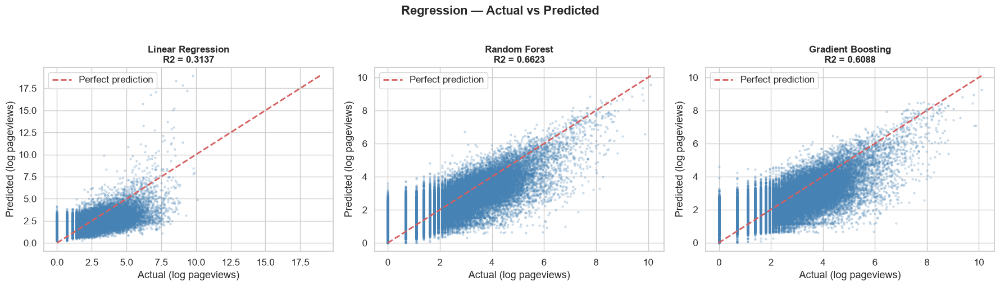
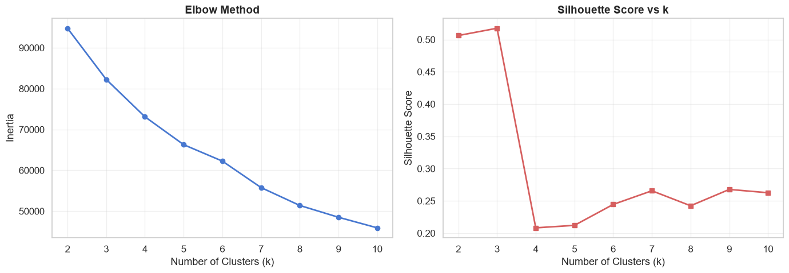
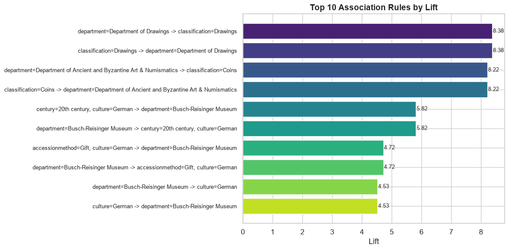

The raw data needed substantial cleaning
Thirteen of the 68 raw columns are more than 80% empty and were removed: audio, videos, entries, labeltext, style, commentary, edition, state, signed, details, description, period and periodid. Audio and videos are almost completely absent.
Four more columns (medium, provenance, copyright and standard reference number) are between 58% and 79% empty. They fall below the threshold and were kept for analysis.

Five classes make up 85% of the collection
Photographs (82,212), Prints (68,369), Drawings (26,237), Coins (19,374) and Archival Material (8,086) together account for 204,278 records, or 85.1% of the dataset. The sixth class, Paintings, has only 5,747.
This concentration is why the classification task focuses on these five classes: it keeps the problem practical while covering most of the collection.

Page views are highly skewed
The median artwork has 7 page views, the mean is 44.1 and the maximum is 68,475. On a linear scale almost every record falls into the first bar, so a small number of very popular records dominate.
After the log(1 + page views) transform the distribution becomes readable. The regression task predicts this transformed value so that a few high-traffic records do not dominate the model.

The largest classes are not the most viewed
Paintings have the highest median engagement, followed by Ritual Implements, Manuscripts and Sculpture. Photographs, the largest class in the collection, are near the bottom, along with Coins and Archival Material.
Most classes have a wide spread and many high-view outliers. Photographs in particular include some heavily viewed records, even though the typical photograph receives few views.

Departments are closely tied to classifications
Most departments hold mainly one type of object: the Department of Photographs holds 55,425 photographs, the Department of Prints 57,376 prints, the Department of Ancient and Byzantine Art & Numismatics 18,645 coins, the Department of Drawings 15,895 drawings, and Archives 1,820 archival items.
The Busch-Reisinger Museum, the Department of Asian Art and a few smaller departments are the exceptions, holding a mix of photographs, prints, drawings and other objects.

Tree models classify artworks with about 98.5% accuracy
- Gradient Boosting: 0.9856 accuracy; 0.99 weighted F1.
- Random Forest: 0.9844 accuracy; 0.98 weighted F1.
- Logistic Regression: 0.8628 accuracy; 0.86 weighted F1.
Coins are almost always identified correctly (3,871 of 3,875 for Gradient Boosting). The most common error for the tree models is Archival Material predicted as Photographs, which gives Archival Material the lowest recall (0.90 for Gradient Boosting).
Logistic Regression, which draws linear boundaries between classes, confuses Photographs and Prints about a thousand times in each direction. This gap suggests the classes are separated by non-linear combinations of features.

Department is the strongest predictor
The encoded department is the most important feature by a clear margin, followed by rank, century, the numeric century and years in the collection.
This matches Figure 5: an artwork's type is predicted mainly from which department holds it, together with rank and time-related features such as century and years in the collection. The signal is spread across several pieces of metadata rather than a single measurement.

Page views are partly predictable from metadata
- Random Forest: R² = 0.6623; MSE = 0.7749; MAE = 0.6754.
- Gradient Boosting: R² = 0.6088.
- Ridge Regression: R² = 0.3200.
- Linear Regression: R² = 0.3137.
The tree models follow the perfect-prediction line much more closely than Linear Regression, which suggests the relationship between metadata and page views is not linear. Page-view columns were excluded from the predictors to avoid leakage.
Even the best model leaves about a third of the variation unexplained, so collection metadata explains part of online attention but not all of it.

Clustering structure depends on the method
Silhouette scores are highest at k = 2 (0.506) and k = 3 (0.518) and lie between about 0.21 and 0.27 for k = 4 to 10, while the elbow curve shows no sharp bend. Four clusters were used to profile the data, with a silhouette score of 0.208.
Other methods give different pictures. DBSCAN finds 20 clusters with 6.1% of points treated as noise (silhouette 0.086), and Ward hierarchical clustering (on a 3,000-record sample) scores 0.519 with very uneven cluster sizes. The collection does not divide into one natural set of groups, so these clusters are best read as exploratory.

Association rules confirm the department link
Apriori found 89 frequent itemsets and 181 rules. The strongest links the Department of Drawings with the Drawings classification (support 0.0675, confidence 0.9207, lift 8.38), followed by the Department of Ancient and Byzantine Art & Numismatics with Coins (lift 8.22).
The remaining top rules connect the Busch-Reisinger Museum with German culture, 20th-century works and gifts (lift 4.5 to 5.8). Every one of the top ten involves a department, which supports Figures 5 and 7 with a third method. Lift measures co-occurrence, not cause.
Anomalies, observations and patterns
- Anomaly: page views are extremely uneven, from a median of 7 to a maximum of 68,475. About 12% of records are flagged as page-view outliers by the IQR rule; they were kept because they may reflect genuine popularity rather than errors.
- Anomaly: Ward clustering's high silhouette score (0.519) comes with very uneven clusters of 2,788, 197, 13 and 2 records, so a good score alone does not guarantee a useful grouping.
- Observation: tree ensembles outperform linear models on both tasks: about 98.5% against 86% accuracy for classification, and R² of 0.66 against 0.31 for page-view prediction.
- Observation: the most common classes are not the most viewed. Paintings attract the highest typical engagement, while Photographs, the largest class, receive relatively little.
- Pattern: the museum's department structure appears throughout the analysis: in the department and classification heatmap, as the most important classification feature, and in the strongest association rules.